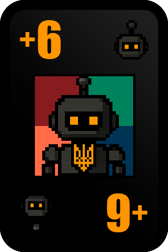
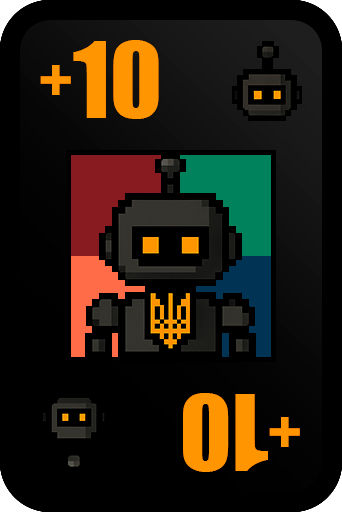
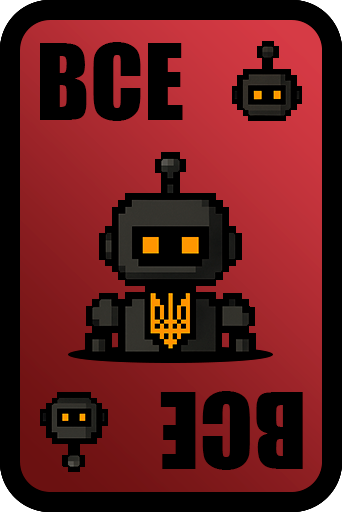
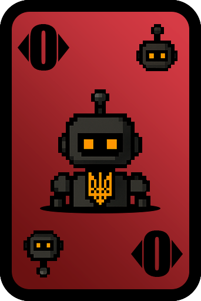
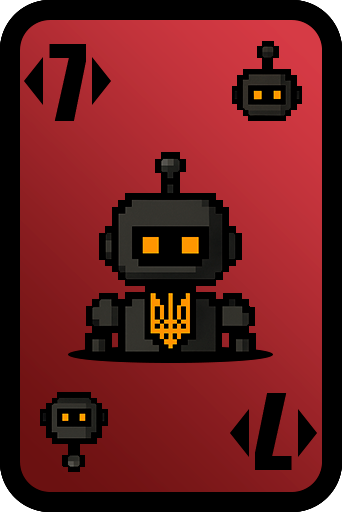

UNO
Що це за гра?
Класична карткова гра UNO! Грайте з друзями, використовуйте спеціальні карти та вигравайте. Перший гравець, який позбувся всіх карт, виграє!
Правила класичного режиму
- Кожен гравець на початку гри отримує 7 карт. Гра починається з випадкової карти на столі
-
Гравці ходять по черзі за годинниковою стрілкою. Під час свого ходу ви можете:
- Зіграти карту, яка відповідає кольору або номеру останньої карти на столі
- Зіграти спеціальну карту (Wild, +2, +4, Reverse, Skip)
- Взяти карту з колоди, якщо немає підходящої карти для ходу
- Карти взятки (+2, +4) можна накладати одна на одну: якщо на вас покладено +2, ви можете покласти свою +2 того ж кольору, передавши ефект наступному гравцю (він візьме вже 4 карти). Штрафи накопичуються!
- Карта +4 може бути оскаржена: якщо ви підозрюєте, що гравець зіграв +4 блефуючи (хоча у нього була підходяща карта), ви можете оскаржити. Якщо оскарження успішне - гравець бере 4 карти замість вас. Якщо невдале - ви берете 6 карт
- Карта Reverse змінює напрямок гри (за годинниковою ↔ проти годинникової). У грі з двома гравцями Reverse працює як Skip (пропуск ходу)
- Карта Shuffle збирає всі карти всіх гравців, перемішує їх та перерозподіляє порівну (кожен отримує стільки ж карт, скільки мав до перемішування)
- Якщо у вас немає підходящої карти, ви повинні взяти одну карту з колоди. Якщо ця карта підходить, ви можете зіграти її одразу. Якщо ні - хід переходить наступному гравцю
- Коли у вас залишається 1 карта, ви повинні натиснути кнопку "УНО!". Якщо інший гравець натисне "УНО!" за вас раніше - ви берете 2 карти як штраф
- Перший гравець, який позбувся всіх карт, виграє раунд і отримує 3 очки. Всі інші гравці, які позбулися карт (крім останнього з картами), отримують по 1 очку. Останній гравець з картами отримує 0 очок
Спеціальні карти (Класичний режим)

+2 (Draw Two)
Наступний гравець бере 2 карти з колоди та пропускає свій хід. Можна використати карту +2 того ж кольору, щоб передати ефект далі наступному гравцю.

Пропустити хід (Skip)
Наступний гравець пропускає свій хід. Можна використати карту Skip того ж кольору або того ж типу, щоб передати пропуск ходу наступному гравцю.

Реверс (Reverse)
Змінює напрямок гри (за годинниковою стрілкою ↔ проти годинникової стрілки). У грі з двома гравцями працює як Skip (пропуск ходу).

Вибір кольору (Wild)
Можна використати в будь-який момент, навіть якщо є підходящі карти. Після використання ви обираєте колір, який має бути наступним. Не додає карт іншим гравцям.

+4 (Draw Four)
Наступний гравець бере 4 карти з колоди та пропускає свій хід. Ви обираєте колір для наступного ходу. Можна використати тільки якщо немає підходящої карти того ж кольору. Інші гравці можуть оскаржити блеф (+4) і перевірити, чи справді у вас не було підходящої карти.

Перемішування (Shuffle)
Збирає всі карти всіх гравців, перемішує їх та перерозподіляє порівну між гравцями (кожен отримує стільки ж карт, скільки мав до перемішування). Після цього ви обираєте колір для наступного ходу.
Правила режиму No Mercy
Режим No Mercy - це більш жорстка версія UNO!
Режим No Mercy використовує звичайні правила UNO з наступними відмінностями:
- У колоді немає карт +2 - замість них є потужніші карти +6 та +10
- Карта +4 не може бути оскаржена (оскарження недоступне)
- Якщо у гравця накопичується 25 або більше карт, він автоматично вибуває з гри
- Додані спеціальні карти з унікальними механіками (описані нижче)
Всі інші правила залишаються такими ж, як у класичному режимі: роздача 7 карт, чергування ходів, використання карт за кольором або номером, взяття карт з колоди, система "УНО!", розподіл очок (3 очки переможцю, 1 очко всім іншим, крім останнього з картами, 0 очок останньому).
Нові карти режиму No Mercy

+6 (Draw Six)
Наступний гравець бере 6 карт з колоди та пропускає свій хід. Працює як карта +2 в класичному режимі - можна накладати одну на одну, збільшуючи штраф. Якщо на вас покладено +6, ви можете покласти свою +6, передавши штраф наступному гравцю (тоді він бере вже 12 карт).

+10 (Draw Ten)
Наступний гравець бере 10 карт з колоди та пропускає свій хід. Найпотужніша карта взятки в режимі No Mercy. Також можна накладати, збільшуючи штраф. Можна покласти на +6, щоб передати ще більший штраф.

All (Скинути всі)
Дозволяє скинути всі карти одного кольору з вашої руки. Наприклад, якщо у вас є червона All карта, ви можете скинути всі червоні карти з вашої руки одразу.

Карта 0 - Обмін руками по напрямку
Коли ви зіграєте карту 0, всі гравці обмінюються руками по напрямку гри. Наприклад, у грі за годинниковою стрілкою: гравець A передає руку гравцю B, гравець B передає руку гравцю C, гравець C передає руку гравцю A. Це може радикально змінити ситуацію в грі!

Карта 7 - Вибір гравця для обміну
Коли ви зіграєте карту 7, ви можете обрати будь-якого гравця для обміну руками. Ви обмінюєтеся всіма вашими картами з обраним гравцем. Це потужна стратегічна карта, яка дозволяє обмінятися з гравцем, у якого багато карт, або навпаки - якщо у вас є багато карт.
Налаштування гри
Всі налаштування змінюються через /truthsettings у розділі UNO.
No Mercy
Вмикає жорсткий режим UNO з окремими картами та механіками.
Авто «УНО!»
Автоматично натискає «УНО!» при одній карті на руці.
Брати карти до збігу
Гравець добирає карти, доки не з'явиться карта, яку можна зіграти.
Втручання
Дозволяє підкинути ідентичну карту поза чергою протягом короткого часу після чужого ходу.
Оскарження
Дозволяє оскаржити +4 у класичному режимі, якщо є підозра на блеф. Якщо людина кладе +4, але в неї були інші варіанти ходу, то вона бере 4 карт, за умови, що інший гравець натиснув "оскаржити".
«+4» перекриває «+2»
Дає змогу перекрити +2 картою +4 та перенаправити штраф.
Перший до фінішу
Раунд завершується одразу після фінішу першого гравця.
Приєднання після початку
Дозволяє новим гравцям заходити в гру вже після її старту.
Гаряча картопля
На хід дається 15 секунд, якщо не встиг покласти за цей час, то тобі дається +10 карт, як штраф.
Розрізнення кольорів
Додає допоміжні позначки кольору для кращої читабельності карт.
Колір і обмін — Тру Ботик
Тру ботик буде робити випадковий вибір кольору та обмін картами за вас.
Відмова від обміну після 7 (No Mercy)
Дозволяє відхиляти обмін руками після карти 7 у режимі No Mercy.